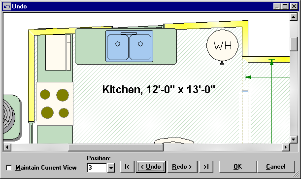

Undo (Edit Menu) |
  
|
Undo (Edit Menu) |
|
Icon: . Keyboard Shortcut: ALT, E, U
Opens the Undo dialog, shown below, where you can backtrack the recent changes you made to the drawing. The Undo feature can be turned off on the Drawing Board Optionsdialog. Having Undo turned on slows down the performance of the drawing, especially with very large drawings.

Maintain Current View: When checked, keeps the zoom and scroll the same on the drawing as you click Undo or Redo. Leaving this box unchecked makes it so the drawing zoom is the same as it was when you made the changes for each step in the Undo history.
Position: Sets the number of undo operations to perform. Enter the number of operations to perform and press Enter, or select the number from the dropdown list. This number changes automatically as you press the Undo and Redo buttons.
Undo as Far As Possible: Goes all the way back in the Undo history. See also the Maximum Undo Operations input on the Drawing Board Options dialog.
Undo: Goes back one step in the Undo history.
Redo: Goes forward one step in the Undo history.
Redo All the Way: Displays the drawing in its current state.
OK: Sets the drawing to the position in the Undo history that you selected and closes this dialog.
Cancel: Closes this dialog without making any changes.